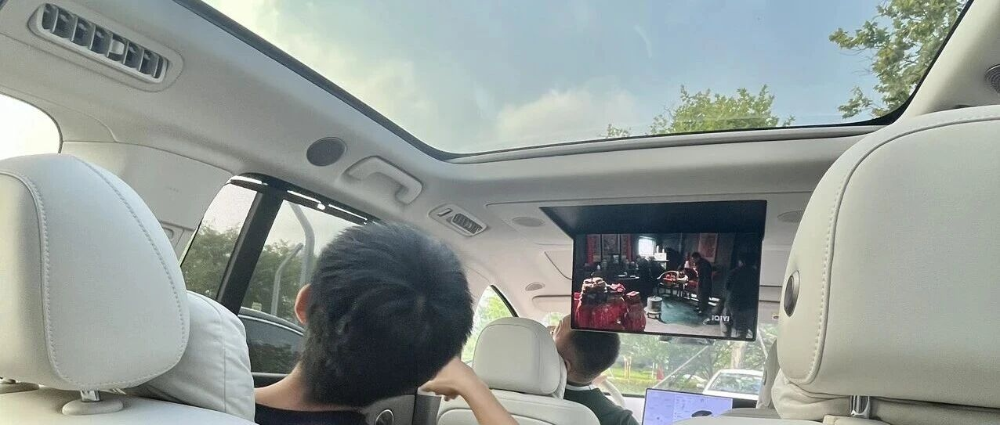

普通打工人，存多少钱能提前退休！
点击关注 秋秋在分享
一起实现财务自由退休
大家好，我是秋秋呀！
最近在看一本书——《提前退休说明书》，作者是从上班族年薪15万实现财务自由的。
她没有疯狂兼职，没过苦行僧式的生活，只是循序渐进，就实现提前退休了！
原因是：摒弃4%法则，采用了更适合打工人的2.5%原则。
FIRE运动与4%原则
像我们熟悉的FIRE运动（Financial Independence, Retire Early的缩写，即“财务独立，提早退休”），其核心是“4%原则”。
你的年均生活费是总资产的4%，用利息生活，钱就永远花不完。
但仔细算算，一年想花10万？得有250万存款！(10万÷4%=250万)
对于大多数月薪5000左右的普通打工人，简直天文数字！
更别说为了存到钱，还要提高储蓄率，先苦后甜才能换取提前退休生活。
作者就提出了更适合打工人专属的退休方案。
2.5%原则。

也就是2.5%的花销是来自财产性收入，省下1.5%可以用劳动收入补齐。
比如我的年均生活费用10万元，提前退休后每年仍有5万元收入，那剩余的5万元生活费靠利息补齐。
你的"财产性收入"和"劳动性收入"各占一半，为提前退休做准备。
比如你每月开销7500元，投资收入覆盖3750，工作收入覆盖3750，这样你每个月收入1万，即使降低也不会有根本性影响。
等什么时候能用总资产的2.5%用于日常开销，就真的实现提前退休了！
这样的好处是？

1、不用过着苦行僧般的生活，正常消费也能早日退休
2、投资就算腰斩，剩下一半也够你继续美滋滋退休
3、每年取的钱更少，也完全不用担心坐吃山空
在我们存款不多的情况下，真的不用强迫自己全部靠利息生活。
用现有存款利息，能覆盖一半的生活费，也很不错！
后期不管是降低开销还是存款不断增多，都更容易实现财务自由。
当然，作者也给出了实现提前退休的方法：
快乐赚钱，快乐存钱，快乐钱生钱。
1. 快乐赚钱
主业努力升职加薪，副业做点喜欢的～
副业的方式我也贴出来，大家感兴趣也可以去书里看。

2. 快乐存钱
其实无痛存钱法，最有效的方法是：过低物欲的生活。
作者的秘诀：下单前先做功课！彻底调查想买东西的性能、价格、设计。
如果感到调查太麻烦而想要放弃购买，说明你根本不是刚需！

3. 快乐钱生钱
在积累一定程度的资产后要开始投资，同时，预留一定的应急资金。
作者是80%追求收益，20%安全垫底～大家可以根据风险偏好调整！
这本书最打动我的是——没有鼓吹极端节俭，没有要求一味能靠利息生活，而是教你找到适合自己的节奏。

毕竟提前退休不是为了不工作，而是为了过上真正为自己而活的人生～
如果利息已经负担大部分生活费，工作只是调味剂，也未尝不算提前退休的一种。